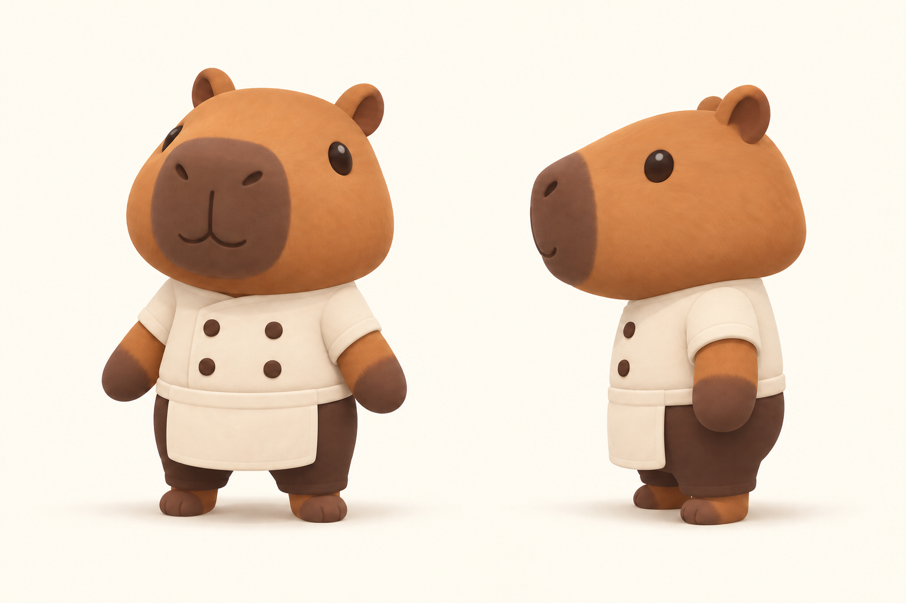
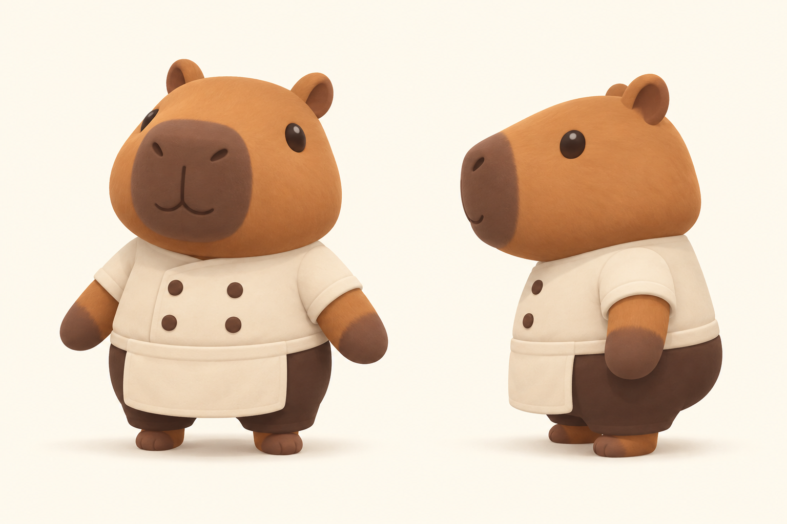

Bara Kitchen · C1 approved · Big round head, simple animal eyes, and tiny legs. C2 is kept as an earlier alternative.
A smaller belly and hips, keeping the rounded, cuddly shape.

A narrower little body that puts more emphasis on the big head.

The starting face and very short legs.